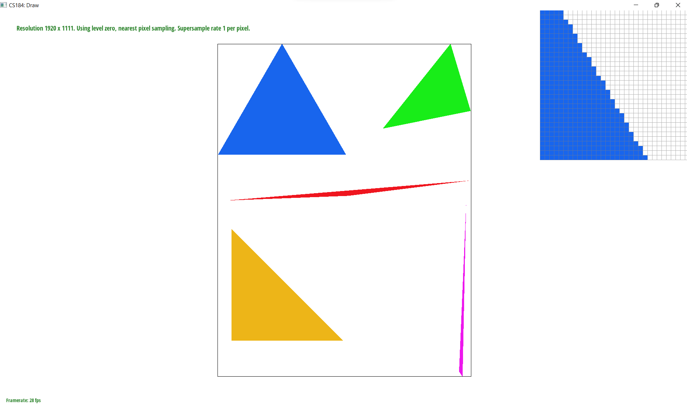
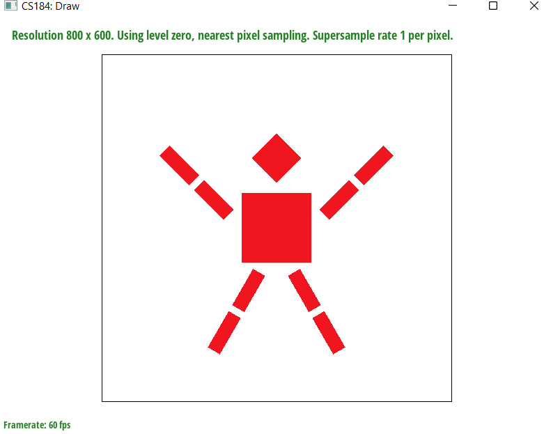
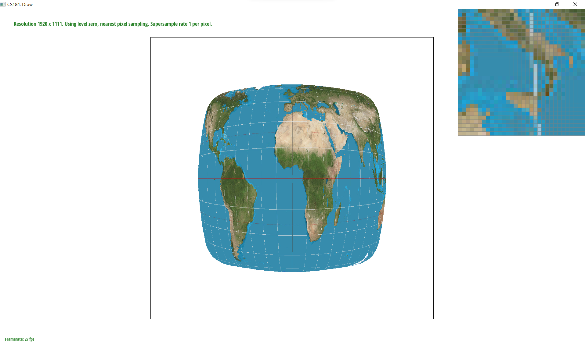
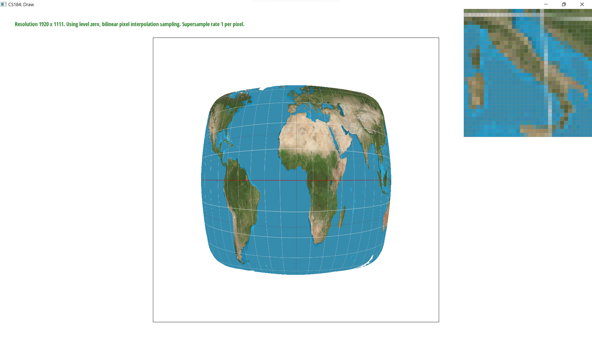
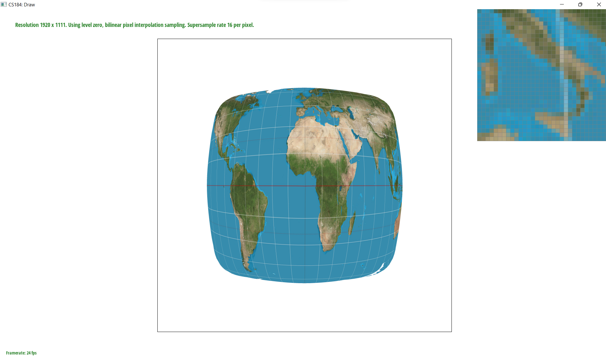

CS184 HW1: Rasterizer
Task 1
1. Walk through
To determine whether each pixel on the frame buffer is inside a given triangle:
- First, since the entire frame buffer is too large, it's too slow to traverse it entirely. Therefore, we
start
by calculating the bounding box for each of the three triangles using their vertices.
Then, we want to check whether each pixel within the bounding box is inside the triangle. We approximate the
coordinates of the bounding box
boundaries to integers using the floor function for easier traversal of pixels. Additionally,
we consider the coordinates of each pixel's midpoint as the coordinates to be evaluated within the function
to determine whether the pixel is inside the triangle.
- Next, we determine whether the vertices of the given triangle are in clockwise or counterclockwise order. We
achieve this by calculating the cross product of Vector AB: → and Vector AC: →, where A, B, and C represent
the vertices
of the triangle.
If the cross product is negative, it indicates a clockwise order; otherwise, it indicates a counterclockwise
order.
- Furthermore, we use the three-line test. If the vertices are in clockwise order, the result of the
three-line test should be negative for the pixel to be inside the triangle.
Conversely, if the vertices are in counterclockwise order, the result of the three-line test should be
positive for the pixel to be inside the triangle.
- If the pixel is inside the triangle, we fill the given color into the corresponding position of the sample
buffer where the pixel resides. (In Task 1, as we haven't performed super-sampling yet, the size of the
frame buffer equals the size of the sample buffer.)
- Finally, in the
resolve_to_framebuffer() function, we directly transfer the colors from the
sample buffer to the rgb_framebuffer_target. This allows the colors to be displayed on the screen.
2. Algorithm Efficiency
Since our algorithm does not traverse the whole frame buffer, but just traverse the bounding box of the
triangle, our algorithm equals to the one that checks each sample within the bounding box of the triangle.
3. Image Gallery
Rasterize triangle without supersampling

Task 3
I tried to make the robot cheer up by doing the rotation to his arms and legs.
cheer-up robot

Task 5
1. Pixel Sampling
- Firstly, given the coordinates of the three vertices of the triangle on the frame buffer and the coordinates
of an internal point of the triangle, we can calculate the Barycentric coordinates: \(\alpha\),\(\beta\), \(\gamma\) = 1 -
\(\alpha\) - \(\beta\).
- Secondly, knowing the corresponding coordinates of the three vertices of the triangle on the texture, we can
utilize the previously calculated \(\alpha\), \(\beta\), \(\gamma\) to calculate the coordinates of the internal point
of the triangle on the texture using the Barycentric formula.
- Since the mapping coordinates on the texture may not be integers, we cannot directly obtain the color
corresponding to the sample. Hence, we have two methods:
sample_nearest() and
sample_bilinear() to obtain the color corresponding to the sample.
- Two sampling methods
sample_nearest(): This means we will find the nearest vertex on the texture to the
sample texture coordinate and assign the color of that vertex to our sample.sample_bilinear(): This means we will find the four nearest vertices on the texture to
the sample texture coordinate and use trilinear interpolation to calculate the color of the sample.
2. Image Gallery
Nearest Sampling + Sampling Rate = 1

Nearest Sampling + Sampling Rate = 16
Bilinear Sampling + Sampling Rate = 1

Bilinear Sampling + Sampling Rate = 16

3. Difference between two sampling methods
- When the sample rate is low, there will be a large difference between those two methods and we should use
the bilinear sampling method. Since the number of samples we have is small, we need bilinear sampling to
make use of the colors of other points on the texture to make the image seem smooth. If we only make use of
the nearest point on the texture, the image may look sharp.
- When the sample rate is high, we can use either bilinear sampling or nearest sampling. Since the number of
samples we have is large, even if each sample is assigned with the color value nearest to it, it will still
create a smooth vision effect.